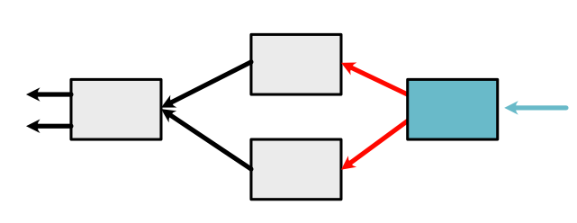
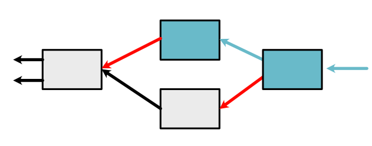

Machine Learning Engineering
Lecture 8
Autodifferentiation
Homework Reminder
Due next Tuesday (Material done)
Next Lecture Sunday (NY PM)
Live Session
Warnings / Updates
Lecture Quiz
Outline
Review: Functions
Chain Rule
Backward
Backpropagation
Functions
Review: Functions
Function \(f(x) = x \times 5\)
Implementation
class TimesFive(ScalarFunction): @staticmethod def forward(ctx, x): return x * 5\(x\) is unwrapped (python number)
Multi-arg Functions
Code
class Mul(ScalarFunction):
@staticmethod
def forward(ctx, x, y):
return x * y
Chain Rule
Python Details
Use apply for the above Functions
x = minitorch.Scalar(10., name="x") y = minitorch.Scalar(5., name="y") z = TimesFive.apply(x) out = TimesFive.apply(z)Apply unwraps, calls, and wraps again
Chaining Boxes
Chaining
x = minitorch.Scalar(10., name="x")
g_x = G.apply(x)
f_g_x = F.apply(g_x)
Chain Rule
Compute derivative from chain

Chain Rule
Two Arguments: Chain
Two Arguments: Chain
Coding Derivatives
For each \(f\) or \(g\) we need to also provide \(f'\) and \(g'\)
This part can be done through local symbolic or numeric differentiation

Picture
Code
Backward use \(g'\)
Returns \(g'(x) \times d_{out}\)
class TimesFive(ScalarFunction): @staticmethod def forward(ctx, x): return x * 5 @staticmethod def backward(ctx, d_out): g_prime = 5 return g_prime * d_out
Code
What about \(g(x, y)\)
Returns \(g'_x(x,y) \times d_{out}\)
class AddTimes2(ScalarFunction): @staticmethod def forward(ctx, x, y): return x + 2 * y @staticmethod def backward(ctx, d_out): g_prime_x = 1 g_prime_y = 2 return g_prime_x * d_out, g_prime_y * d_out
Code
Handling Variables
Consider a function Square
\(g(x) = x^2\) that squares x
Derivative function uses variable \(g'(x) = 2 \times x\)
However backward doesn't take args
def backward(ctx, d_out):
Context
Arguments to backward must be saved in context.
class Square(ScalarFunction):
@staticmethod
def forward(ctx, x):
ctx.save_for_backward(x)
return x * x
@staticmethod
def backward(ctx, d_out):
x = ctx.saved_values
f_prime = 2 * x
return f_prime * d_outContext Internals
Run Square
x = minitorch.Scalar(10)
x_2 = Square.apply(x)
x_2.history.contextBackpropagation
Full Graph

Method
Graph propagation
Ensure flow to original Variables.
Terminology
Leaf: Variable created from scratch
Non-Leaf: Variable created with a Function
Constant: Term passed in that is not a variable
Algorithm
if the Variable is a leaf, add its final derivative
if the Variable is not a leaf,
Apply chainrule as derivative as \(d_{out}\)
Loop through all the previous Variables
Add to the queue.
Example

Example
Example
Example

Example

Example